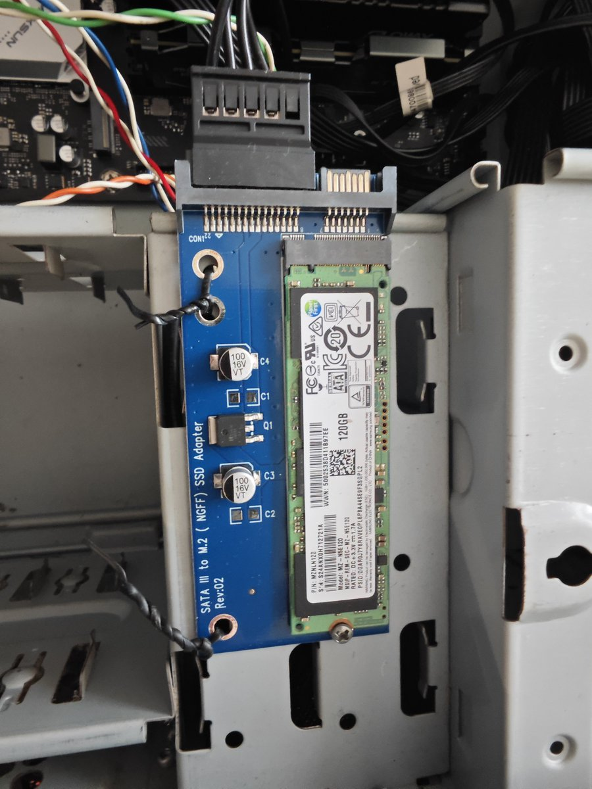
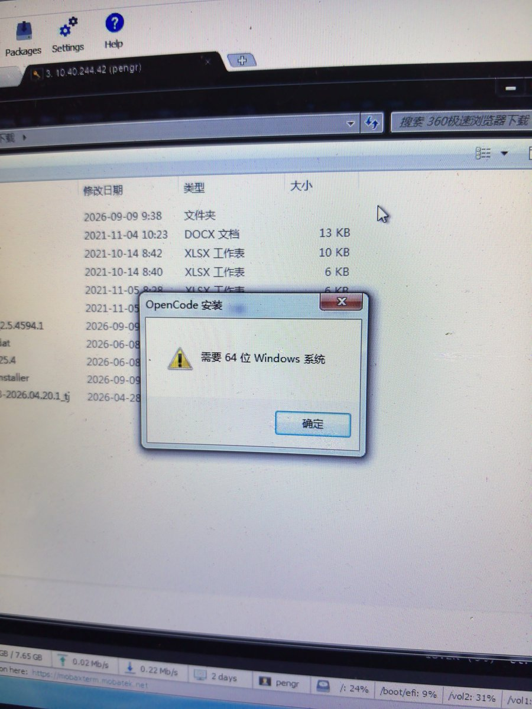

老东西看笔记本太废物，上次拿三代i7台式配置不好搪塞过去了，想不到他让IT把内存扩到2条4G还顺便买了SATA硬盘让我扩说是机械太慢想换固态飞起，可主板上哪来m.2接口？
于是IT去库房找了一圈，居然被他瞎猫碰到死耗子找了块转接板居然还有降压电路，看供电线没有3.3V。不过NGFF转SATA的转换板，电源部分有点....，就几瓦的功率，过得去
行吧，能跑就不计较那么多了，装个豆包、WorkBuddy让他每日签到去吧。我感觉领导玩几天就腻了，给他个国模让他自我感动咱们中国人能飞就行，芜湖起飞～

于是IT去库房找了一圈，居然被他瞎猫碰到死耗子找了块转接板居然还有降压电路，看供电线没有3.3V。不过NGFF转SATA的转换板，电源部分有点....，就几瓦的功率，过得去
行吧，能跑就不计较那么多了，装个豆包、WorkBuddy让他每日签到去吧。我感觉领导玩几天就腻了，给他个国模让他自我感动咱们中国人能飞就行，芜湖起飞～


单位领导依旧喜欢他的Win7笔记本，还以为他被AI时代开窍了找我问怎么装OpenCode，结果是32位的Windows 7
他跟我说，他刷到视频说5美金就能玩大模型，连夜翻箱倒柜才找到这陪伴自己多年的笔记本，想不到还能开机就带来找我帮忙
不过2GB DDR3能干啥？装64位系统绝对得卡死 https://t.co/L28aRYWheE
他跟我说，他刷到视频说5美金就能玩大模型，连夜翻箱倒柜才找到这陪伴自己多年的笔记本，想不到还能开机就带来找我帮忙
不过2GB DDR3能干啥？装64位系统绝对得卡死 https://t.co/L28aRYWheE